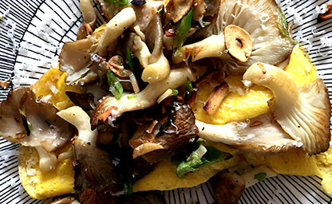

Recipies
We have put together this list of a few recipies we love, we hope you enjoy them as much as we do!

Phoenix Oyster Omelette
Melt a tablespoon of butter in a hot frying pan and as the butter is melting rip a handful of Phoenix Oyster Mushrooms into the pan and stir to coat the mushrooms with butter. Stir repeatedly for about 5 minutes until the mushrooms start to brown.
Turn off the heat and squeeze half a large lemon into the mushrooms allowing the heat to evaporate the liquid. This enhances the flavour of the mushrooms
Beat two eggs with a dash of salt and a tablespoon of water. With the heat still off the pan, pour the eggs into the pan and gently add the mushrooms, distributing them evenly across the eggs. Grate some parmesan cheese and a few cm of spring onion and cover the pan with another frying pan or a large stainless steal mixing bowl that fits into the pan to keep in the heat. Leave for five minutes, remove the lid and with a spatular, serve onto a plate and enjoy! Serves 1.

Pink Oysters, Fresh Beans and Salmon
Tear a handful of pink oyster mushrooms into a hot pan of melted butter. Ensuring the butter does not burn, sauté the mushrooms until they begin to turn brown (about 3-4 minutes). Turn off the heat and squeeze a lemon through your fingers, straining out the pips, into the pan. Allow the juice to reduce with the mushrooms and when all the juice is absorbed, take out the mushrooms and put to one side.
Add a tablespoon of coconut oil to the pan, turn up the heat and when very hot add the beans and cherry tomatoes. Cook for a further 5 minutes flipping and stirring constantly to avoid burning and ensure the beans cook on all sides. After 5 minutes, toss in a few tablespoons of pine nuts and let them simmer in the oil with the beans and tomatoes for a few minutes more, continue stirring.
Remove the bean medley from the pan, keeping the oil in the pan, turn the heat to half and gently place salmon chunks (about 3cm across) in the remaining oil. Turn the chunks every 30 seconds for 2 minutes. Just before the salmon is cooked through, place the mushrooms and bean medley back into the pan and gently mix everything together. Throw in a chopped up handful of parsley or coriander and serve with freshly ground pink Himalayan salt and black peppercorns. Yum! Serves 2.